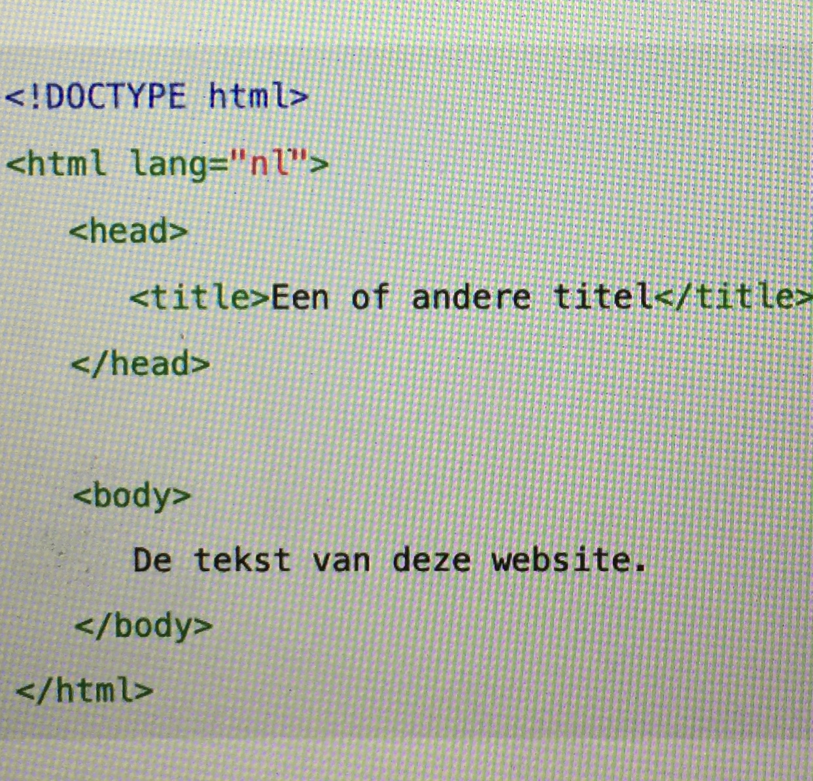

Html is een programeertaal. Html is gespecialiseerd in het internet. Html is een afkorting van het woord HyperText Markup Language. Dit betekent dat Hypertext is tekst met hyperlinks en Markup Language betekent ‘opmaaktaal'.
HTML is in 1980 ontwikkeld door natuurkundige Tim Berners-Lee. Het was toen een opmaakcode voor het delen van documenten.
Het eenvoudigste programma om HTML-code in te typen is Kladblok. Zelfs professionals gebruiken wel eens Kladblok om snel een wijziging aan te brengen. Maar er zijn veel handigere programma’s, speciaal voor het maken van HTML-bestanden. Zo’n programma noem je een editor.
De basis van een website zijn de tags. Deze tags zorgen ervoor dat een systeem het kan lezen.
een pagina bestaat uit:
de basis tags zijn
opening tag: <...>
closing tag: </..>
Op de ... kunnen de volgende basis afkortingen:
tussen de tags body zitten de bovenstaande tags.
Om goed een website te leren bouwen raad ik aan om de website W3Schools te bezoeken